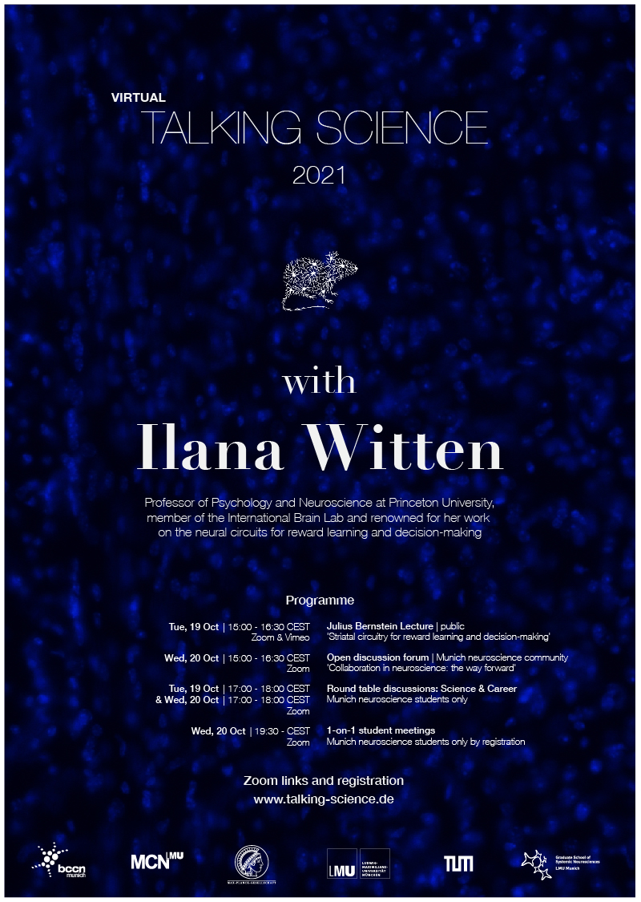

(Virtual) Talking Science with Ilana Witten
Talking Science is a unique opportunity to meet and talk about neuroscience with a leading researcher in an informal atmosphere - a two-day program for the PhD students of LMU, TUM, and the MPIs. In 2021 all Talking Science events will take place online.

About
This year's guest is Ilana Witten (Professor of Pyschology and Neuroscience at Princeton University).
Professor Witten’s lab studies the neural circuits for reward learning and decision-making, with a focus on the role of dynamics and feedback in these cognitive processes. To study the underlying striatal circuit level mechanisms in the mesolimbic pathway, she combines a wide range of technical approaches, including optogenetics, rodent behaviour, electrophysiology, imaging and computational modelling.
She graduated from Princeton University with an A.B. in physics in 2002, and received her Ph.D. in neurosciences from Eric Knudsen’s lab at Stanford University in 2008. She then stayed at Stanford to conduct her postdoctoral studies in the lab of Karl Deisseroth, where she focused on using optogenetic technologies to dissect genetically defined cell types within neural circuits. In 2012, she was recruited to Princeton University where she was recently promoted to full professor. Since 2017, her lab forms part of the International Brain Laboratory, a joint effort of 20 laboratories around the world aiming to combine their expertise to determine how the brain functions in a simple decision in a mouse.
The Talking Science program consists of two talks, open to the public, and two round table discussions on science and career, open to Munich neuroscience students. Additionally, Munich neuroscience students will have the opportunity to sign up for individual one-on-one meetings with Professor Witten. Sign up here!
Schedule
- Tuesday, 19.10.2021 at 15:00 CEST – join via Zoom or Vimeo livestream
- Julius Bernstein Lecture: Striatal circuitry for reward learning and decision-making
This lecture is open to the general scientific community and is intended as an introduction into the Talking Science program. - Tuesday, 19.10.2021 at 17:00 CEST – join via Zoom (link will be provided after registration)
- Round Table Discussion: Science
This first round table discussion will give you an opportunity to ask questions regarding Prof. Witten's lecture, and will run into a more detailed discussion about the methods and discoveries in her research. - Wednesday, 20.10.2021 at 15:00 CEST – join via Zoom (link will be provided after registration)
- Open Discussion Forum: Collaboration in neuroscience: the way forward
This discussion is open to the general scientific community. - Wednesday, 20.10.2021 at 17:00 CEST – join via Zoom (link will be provided after registration)
- Round Table Discussion: Career
In this second round table we will gain insight from Prof. Witten about her choices throughout her scientific career. Students can also take advantage of this forum to discuss the direction of their own research and future plans. - Wednesday, 20.10.2021 from 19:30 CEST – join via Zoom (link will be provided after registration)
- 1-on-1 student meetings
Opportunity for a personal meeting with Prof. Witten, in which you could discuss issues that directly relate to your own research. Please sign up, as the number of places is limited.

Past speakers
- 2019
- Adrienne Fairhall (U Washington)
- 2018
- Matteo Carandini (UCL)
- 2017
- Christof Koch (Allen Institute for Brain Science) - cancelled
- 2016
- Gina Turrigiano (Brandeis University)
- 2015
- Gilles Laurent (MPI for Brain Research)
- 2014
- Ed Boyden (MIT)
- 2013
- Larry Abbott (Columbia University)
- 2012
- Nikos Logothetis (MPI for Biological Cybernetics)
- 2011
- May-Britt Moser (Kavli Institute of Systems Neuroscience)
- 2010
- Karel Svoboda (Janelia Research Campus)
- 2009
- Markus Meister (Caltech)
Contact
Talking Science is made possible through the generous support of the Bernstein Center for Computational Neuroscience Munich and organized by:
- Yana Kotlyarenko (MPI for Neurobiology)
- Dina von Werder (TUM)
- Lukas Meyer-Olbersleben (LMU)
- Tobias Bernklau (TUM)
- Yannik Bauer (LMU)
- Virginia Palieri (MPI for Neurobiology)